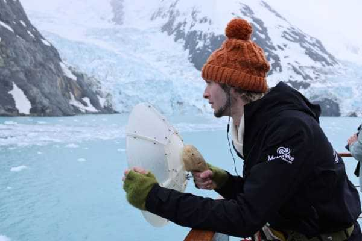

South Georgia Expedition — Antarctic Heritage Trust

In 2023 I travelled to the wild and remote island of South Georgia as a member of the Antarctic Heritage Trust's ninth Inspiring Explorers expedition. I was selected for the visual arts team to create images showcasing the beautiful minutiae of this utterly spectacular and remote island.
Works from the journey were exhibited at the New Zealand Maritime Museum in November 2024. I was seconded onto the education team to develop a card game, and worked with RNZ's Our Changing World to record, narrate and produce a podcast episode about the expedition's meteorology project.
Into Ocean & Ice
Into Ocean & Ice: Artists explore a changing Antarctica — Hui Te Ananui a Tangaroa, New Zealand Maritime Museum, 29 Nov 2024 – 31 Aug 2025.
I'm thrilled to have exhibited a diverse range of works alongside fellow explorers Charlie Thomas, Tegan Allpress, and Rose Lasham. The exhibition showcases artwork we created during and after our 2023 journey.
My works include a special series of glass-printed micrographs, a floor projection, and an immersive musical soundscape. I was awestruck by the scale of the thousands of icebergs we encountered. In the weeks before our arrival, one of the world's largest icebergs (A76A) had run aground to the south, fracturing into millions of pieces — some of these pieces ended up under my microscope, collected from freezing waters in a zodiac and broken apart with an ice pick.
That exploration culminated in Cryosphere: a circular floor projection created from hours of time-lapse footage of melting Antarctic shelf ice and snow. Throughout the exhibition, speakers play location-specific recordings from South Georgia alongside an ambient piece I composed, inspired by my experiences of this beautiful region.
Antarctic Heritage Trust — South Georgia 2023 RNZ — Watching the weather in the far southern seas Maritime Museum — collection object